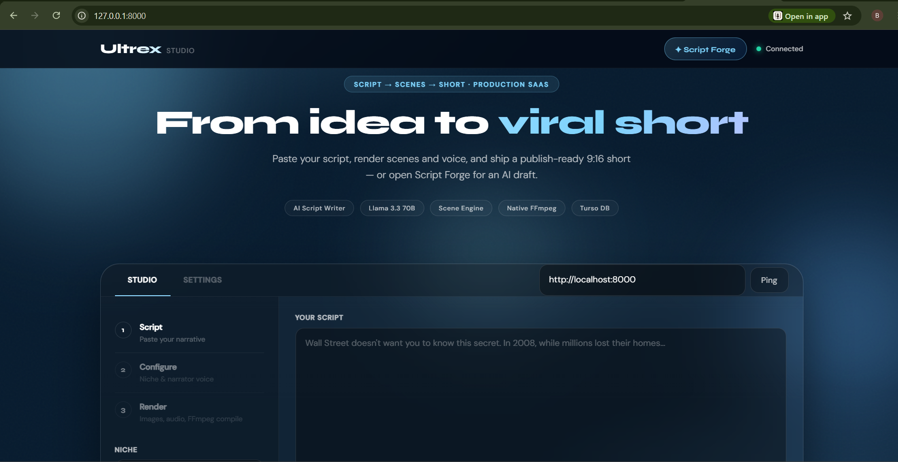

AI Shorts Engine
Ultrex came as an idea last year when I realized I was spending more time consuming content on YouTube than creating it. I decided I was going to learn video editing and start creating shorts myself.
After learning a bit and creating some shorts, I quickly realized the process was not sustainable because of how much time it consumed. I knew there had to be a better way.
That was where Ultrex came from. I initially built it to accept short ideas and use AI to generate images and audio, then use MoviePy to compile everything into a video. It worked, but generation time was too slow.
I researched better alternatives and moved to FFmpeg for optimized media processing, which reduced generation time drastically and made it possible to create a short in about 30 seconds or less.
Then I noticed another bottleneck - getting good scripts. I found that spending time prompting and refining outputs manually still slowed the process down.
So I pushed it further and created an AI agent workflow inside Ultrex that handles creating, reviewing, improving scripts, processing media, and even uploading directly to YouTube.
The result became a system that can go from an idea for a short to a published YouTube video in under 3 minutes. I tested it personally and within three days generated about 400 views and 1.4 hours of watch time.
I haven't deployed it publicly yet because of infrastructure costs involved in hosting video processing pipelines, and currently I want to perfect the experience before making it public.
Tools used: FastAPI, Uvicorn, APScheduler, Groq API, LangGraph, Pollinations AI, Edge-TTS, FFmpeg, Turso, Google OAuth, YouTube Data API, Pydantic, Mutagen, python-dotenv.